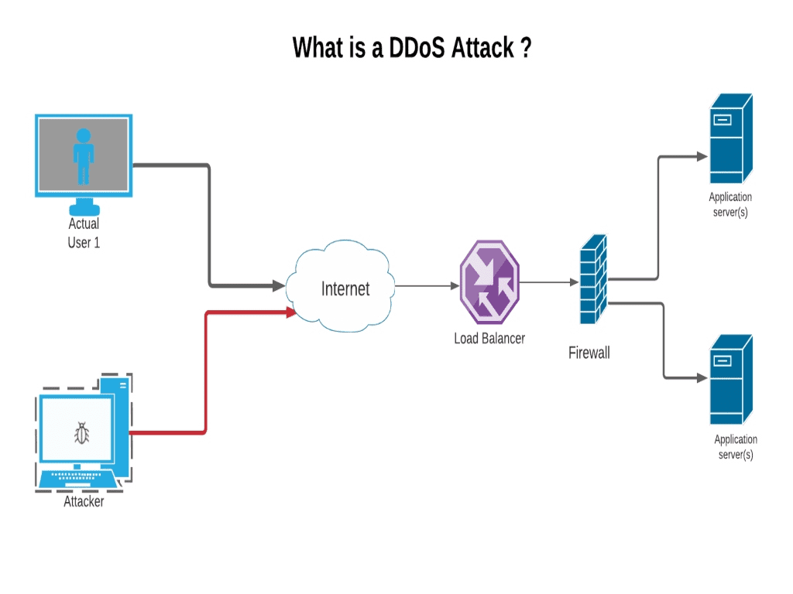

Hi everyone,
In today’s tech world, open endpoints are a common security challenge for many applications. These are endpoints in an app that don’t have sufficient security measures, such as authentication. For example, the login API is typically open—without any authentication needed to access it—making it a prime target for attackers. In this blog, we’ll discuss how attackers exploit these open endpoints, especially DDoS (Distributed Denial of Service) attacks, and how we can secure them without affecting genuine users. We’ll also dive into ways of preventing these attacks, ensuring your system remains safe and responsive.
Understanding Open Endpoints and DDoS Attacks
Open endpoints are APIs that don't require authentication, which makes them vulnerable to various types of attacks. Attackers often target these endpoints first to gain access to your system and exploit it further.
One of the most common attacks on open endpoints is DDoS. In a DDoS attack, the attacker sends a massive amount of requests to the server—up to 1000 requests per second or more. This flood of requests can overwhelm the system and slow it down or even crash it. For instance, imagine an attacker repeatedly calling a login API.
Example Scenario:
Let’s assume the attacker has access to a /login endpoint. They start sending 500,000 requests per minute to your server. Each request tries to send an OTP to randomly generated emails. If the system doesn’t prevent this, it will attempt to send OTPs to 500,000 emails—even if they aren’t real users. This would not only overload the server but also incur significant costs for the company (since sending those OTPs may cost money).
How to Secure Open Endpoints
We can secure open endpoints and protect against DDoS attacks through several strategies.
3.1 Throttling Requests
To prevent overwhelming your system with excessive requests, you can apply throttling to the endpoint. Throttling limits the number of requests a user can make in a given time period.
For example, let’s assume that the /login endpoint normally gets about 10,000 requests per minute on average, with peak traffic reaching 25,000 requests per minute. To be on the safe side, you can set the throttling limit to 45,000 requests per minute. This way, even if an attacker tries to send 500,000 requests per minute, only 45,000 requests will be processed, and the rest will be blocked.
3.2 Key Hashing for Request Integrity
While throttling can help with DDoS attacks, it’s not enough if attackers are able to spoof or alter requests. To prevent attackers from tampering with requests, you can use hashing to validate the integrity of each request.
Here’s how it works:
Every request sent from the client (e.g., the login request) includes a hash generated using the request body and a constant string. The server also generates the same hash using the same data and checks if the hashes match. If an attacker tries to alter the request or its body, the hash won’t match, and the server will reject the request as unauthorized.
We’ll talk more about how to implement this and keep it secure in the next section.
Adding Extra Security with Dynamic Hashing
4.1 Dynamic Key Updates
You can store the hash key (or secret string) on a real-time platform like Firebase, so it can be updated frequently. Every time the key is updated, the application and server will sync the new key through Firebase. The app fetches the new key from Firebase and generates the new hash for every request. The server also fetches the updated key from Firebase and uses it to verify incoming requests. If an attacker tries to use the old key after a key update, the hash won’t match, and their requests will be rejected.
4.2 Key Update and Throttling Reset
Now, let’s say an attacker manages to send a huge number of requests, but the server is throttling the requests to avoid overload. When the server updates the key to prevent the attack, it’s essential to ensure that genuine users don’t get affected by the throttling.
Here’s a solution: When the key is updated in Firebase, we can also reset the throttling counter. This allows genuine users to continue accessing the service without delays while preventing the attack from continuing.
4.3 Intelligent Architecture for Attack Prevention
In this system, we use two interceptors:
- Hash Matching Interceptor: This checks if the incoming request’s hash matches the expected hash. If it doesn’t, the request is rejected.
- Throttling Interceptor: This limits the number of requests allowed per minute.
Here’s how the system works in normal conditions:
The request is first checked by the Hash Matching Interceptor. If the hash matches, it passes through the Throttling Interceptor for rate limiting.
But during a DDoS attack:
The Hash Matching Interceptor will still let requests through if the hash is valid.
The Throttling Interceptor will limit requests once the threshold is reached, allowing only up to 45,000 requests per minute.
If the attack continues and the throttling limit is hit, we trigger a key update and reset the throttling counter. This ensures that the attacker’s requests, using an outdated key, will be rejected by the hash matcher, while genuine users can continue to access the service without being throttled.
Secure Communication with Firebase
To further protect the dynamic key and prevent attackers from gaining access to it, we can secure the communication between the app and Firebase using the Firebase SDK. This SDK ensures that the data is encrypted and difficult to intercept.
Conclusion
Securing open endpoints from attacks like DDoS while still serving genuine users is a challenging task, but with the right combination of throttling, hashing, and dynamic key management, we can effectively prevent unauthorized access and protect our applications. By introducing two layers of security—hash matching and throttling—along with intelligent design choices like dynamic key updates and throttling reset, we can ensure that the system stays resilient even during a high-scale attack, while still delivering a seamless experience to legitimate users.
We hope this guide helps you secure your endpoints and protect your application from DDoS and other malicious attacks. Stay safe and happy coding!
Further Reading / Resources
- How to Implement Throttling in Web Applications
- Understanding DDoS Attacks and Prevention Techniques
- Best Practices for API Security and Authentication